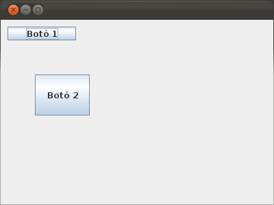
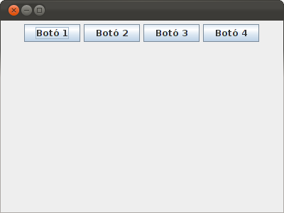
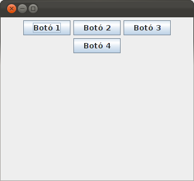
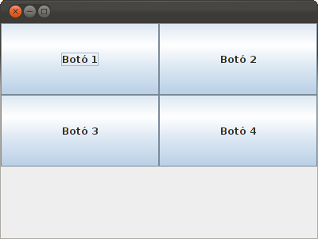
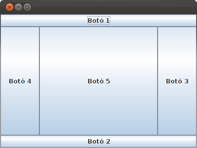
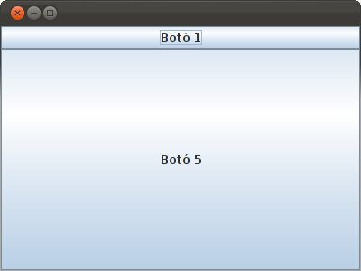

3.- Contenidors
Nota
Com que molts dels exemples són únicament per a mostrar possibilitats, sense cap més valor, no construirem un programa diferent per a cada exemple, sinó que senzillament modifiquem la classe Finestra, i no canviem el programa principal, que és el que està al final de la pregunta 2.
Els diferents components que col·locarem en l'aplicació normalment no els col·locarem directament a la finestra, sinó en layouts que són contenidors d'altres objectes i que permeten col·locar-los de forma ordenada.
Podem col·locar els components directament en el frame, però posant sempre la posició i grandària a cada component. En el següent exemple posem dos botons directament especificant posició i grandària amb el mètode setBounds(x, y, amplaria, altura):
import javax.swing.JButton;
import javax.swing.JFrame;
public class Finestra extends JFrame{
public void iniciar(){
setDefaultCloseOperation(JFrame.EXIT_ON_CLOSE);
setSize(400,300);
getContentPane().setLayout(null);
JButton boto1 = new JButton("Botó 1");
JButton boto2 = new JButton("Botó 2");
boto1.setBounds(10, 10, 100, 20);
getContentPane().add(boto1);
boto2.setBounds(50, 80, 80, 60);
getContentPane().add(boto2);
setVisible(true);
}
}
El resultat seria aquest:

El problema és que es farà molt pesat d'anar precisant la posició i grandària de cada component, si no tenim cap tipus d'ajuda. A més, quan redimensionem la finestra no es recol·locaran els components, ja que hem posat coordenades absolutes.
Per a solucionar aquestos problemes estan els layouts, que són components que col·loquen els components amb una determinada disposició, i que quan redimensionem la finestra es recol·loca amb una disposició elegant. Els layouts són components que agafarem directament de la llibreria AWT, és a dir, no ens cal un contenidor Swing, ja que amb aquells tenim suficient. En les diferents proves col·locarem alguns components (encara que no els hem vist), per veure com queden col·locades les coses.
El primer que haurem de fer és assignar-li a la finestra, al JFrame, un Layout. Es fa amb getContentPane().setLayout(layout). Després anirem afegint components amb getContentPane().add(component), tots dos mètodes del JFrame.
FlowLayout
Col·loca els components un al costat de l'altre, d'esquerra a dreta. Quan ja no li caben un al costat de l'altre els col·loca a la línia de baix.
Mirem aquest exemple:
import java.awt.FlowLayout;
import javax.swing.JButton;
import javax.swing.JFrame;
public class Finestra extends JFrame{
public void iniciar(){
setDefaultCloseOperation(JFrame.EXIT_ON_CLOSE);
setSize(400,300);
getContentPane().setLayout(new FlowLayout());
JButton boto1 = new JButton("Botó 1");
JButton boto2 = new JButton("Botó 2");
JButton boto3 = new JButton("Botó 3");
JButton boto4 = new JButton("Botó 4");
getContentPane().add(boto1);
getContentPane().add(boto2);
getContentPane().add(boto3);
getContentPane().add(boto4);
setVisible(true);
}
}
Que quedarà així:

Però a més si redimensionem la finestra i no caben els 4 botons, doncs baixarà automàticament els que faça falta:

GridLayout
Munta una estructura de files i columnes, i col·loca cada element en una casella, començant dalt a l'esquerra i continuant primer cap a la dreta i després cap avall. En el moment de definir-la podrem dir quantes files i quantes columnes volem. I a més intentarà fer les columnes de la mateixa grandària, igual que les files.
import javax.swing.JButton;
import javax.swing.JFrame;
public class Finestra extends JFrame{
public void iniciar(){
setDefaultCloseOperation(JFrame.EXIT_ON_CLOSE);
setSize(400,300);
getContentPane().setLayout(new GridLayout(2,2));
JButton boto1 = new JButton("Botó 1");
JButton boto2 = new JButton("Botó 2");
JButton boto3 = new JButton("Botó 3");
JButton boto4 = new JButton("Botó 4");
getContentPane().add(boto1);
getContentPane().add(boto2);
getContentPane().add(boto3);
getContentPane().add(boto4);
setVisible(true);
}
}
En aquest exemple hem substituït el FlowLayout per un GriLayout de 2 files i 2 columnes, així posarà un botó en cada casella.

Observeu que hem fixat la grandària a 400x300. Intentarà fer files iguals (150 d'alt) i també les columnes (200).
I ara definirem el GridLayout de 3 files i 2 columnes. Els 4 botons ocuparan les 2 primeres files i quedarà una fila buida. Com que intentarà fer-les igual d'altes, cada botó ocuparà 200x100. Senzillament serà canviar la línia 11 per aquesta:
getContentPane().setLayout(new GridLayout(3,2));

BorderLayout
És el Layout establert per defecte. Hi haurà 5 zones: dalt, baix, dret, esquerra i centre. Quan col·loquem un component li haurem d'especificar en quina zona el volem col·locar en un segon paràmetre amb els valors: BorderLayout.NORTH, BorderLayout.SOUTH, BorderLayout.EAST, BorderLayout.WEST, BorderLayout.CENTER.
import java.awt.BorderLayout;
import javax.swing.JButton;
import javax.swing.JFrame;
public class Finestra extends JFrame{
public void iniciar(){
setSize(400,300);
getContentPane().setLayout(new BorderLayout());
JButton boto1 = new JButton("Botó 1");
JButton boto2 = new JButton("Botó 2");
JButton boto3 = new JButton("Botó 3");
JButton boto4 = new JButton("Botó 4");
JButton boto5 = new JButton("Botó 5");
getContentPane().add(boto1,BorderLayout.NORTH);
getContentPane().add(boto2,BorderLayout.SOUTH);
getContentPane().add(boto3,BorderLayout.EAST);
getContentPane().add(boto4,BorderLayout.WEST);
getContentPane().add(boto5,BorderLayout.CENTER);
setVisible(true);
}
}
Donarà aquest resultat:

Si una zona no l'omplim, redimensionarà la resta per a ocupar tot el lloc. Així, si només posem els botons de les zones nord i centre, quedarà:

Llicenciat sota la Llicència Creative Commons Reconeixement NoComercial SenseObraDerivada 2.5